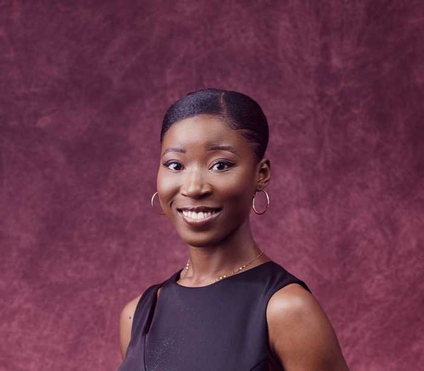

Bio

Faculty Specialist in the XylemLab at the Department of Geographical Sciences, UMD. I hold an M.S. in Geospatial Information Science from the University of Maryland, College Park and a B.A. in Geography & Resource Development and Dance Studies from the University of Ghana, Legon. In my current role, I support remote sensing and machine learning research for sustainable agriculture and food security. Beyond research, I contribute to outreach, event planning, and science-communication efforts that make Earth observation science accessible to broader audiences.
Concurrently, I wear a creative hat. I am a freelance writer, orator, and spoken word artist, and I look forward to collaborating in both fields, so feel free to reach out and connect anytime!